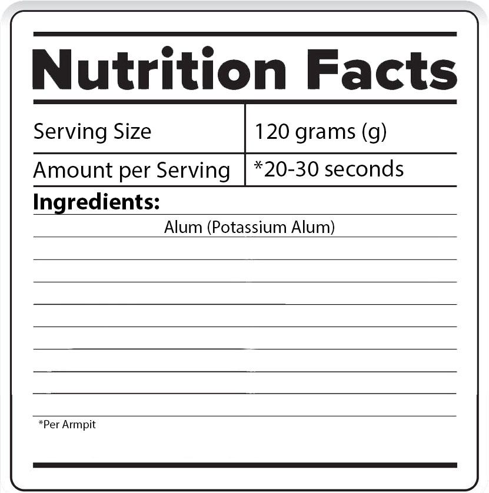

Biork
- Wilf Kenyon
- 4th February 2022
- bathroom, hygene, deodorant
Author:
Created:
Tags:

🌎Introduction🌎
What is Biork Deodorant?
This is a supposed more sustainable and natural alterantive to modern deodorants. It challenges these modern varieties by listening to science to deliver a sweaty experience (this is a good thing explained later) without the smell.
🌎Practical Guide🌎
How do you use it?
- Take off the lid from the stick
- Run the crystal stick under water
- Rub the stick around on one armpit like a roll-on deodorant
- Run the stick under water again
- Repeat for the other pit :)
- Then either dry on a tissue or towel, or leave lid off to naturally dry
Made by who or whom?
The stick is made by a company called "Energy Balance" which produces a small range of environmentally-friendly cosmetics and food suppliments
When & where did ya buy it?
I bought this on the 18th of September 2021 through the green turtle website for £12.00. It is only sold via independent sellers like Green Turtle a few other options can be found here.
.How long does it last?
According to the product website, it should last for about a year.
I have had the stick for about 140 days now (20 weeks) and i'm not gonna lie, i've barely noticed it going down. Even much so, I keep questioning if I am using it correctly (I am btw).
Regarding its "wear and tear" i've accidently dropped it a few times, which has chipped the crystal. But this hasn't made it unusable in any sense, and the dents smooth out quickly so doesnt hurt. And it has not smashed into thousands of tiny pieces which is good I guess!
Tips & Tricks?
I find that the best way to keep it fresh and last longer is just to leave it on my window sill after I use it in the morning. This means that the cork will not become soggy and break off like it did to mine if you look in the photo above.
Also, it is always good to keep water on you if you intend to apply deodorant during the day. If im on the go, or somewhere without a tap, I just get my water bottle pour water onto the stick which will drip onto the ground then apply it like normal.
Now this may sound weird, but if you've finished your shower, gone to your room and forgot to do your deodorant, I sometimes will just rub it into my wet hair to use it?! But I would only reccomend that after a shower, otherwise you're gonna be wiping sweat into your hair which is nasty!
Does it do as intended?
So with this deodorant, the intention is not to prevent sweat, if you want that, I would reccomend looking elsewhere. Instead this product stops the smell of sweat by supressing the bacteria which cause the smell.
Therefore, by using this deodorant, you still sweat like usual, but it is more of a neutral smell. I apply it after I shower in the morning and find it typically lasts for most of the day. But sometimes, I find it has worn off after I wake up in the morning and say i've sweat during sleep.
One thing it does not do so well with is being applied without showering just before; basically if you smell and then apply the deodorant, then it doesn't always work as well. Or I find sometimes that it can take a little while to get rid of smell if you do smell.
Any Downsides?
Yeah, I guess the fact that you still sweat is annoying, as when I be feeling sweaty I just assume I also stink like shit. But.... normally i'm absolutely fine which is cool. Sweating is a natural thing which is needed to release heat and expell (excrete) a load of things from your body so it is healthy to sweat rather than not with typical deodorants or anti-persperants.
You gotta keep water around with you to apply it, normally I find this is fine as I am using it just after having a shower so i'm in a bathroom. Or if I am topping up during the day I will find a bathroom to go to, run it under water, or if I can find somewhere private I pour some water from my waterbottle over the stick and apply it then :').
I just visited an "eco-shop" and saw a different brand offering the same product in its deodorant form. Salt of the Earth produce this alternative at a cheaper price but is slightly smaller (only 90 grams), i've not directly compared it but its another option? The only downside is that this other product uses hard plastic packaging which of course can be recycled but is not as beneficial as used by Biork (as described later).
🌎Let's get down to the science🌎
Aluminium
Alum (natural)
The Packaging
Traditional Deodorants- Aluminium, plastic tops, not separated, roll on plastic
Cork
Upcycling
The Problem
🌎Trust or Bust?🌎
| Category | Rating |
|---|---|
| Environmental: |
|
| Accessibility: |
|
| Healthiness: |
|
| Pleasantness: |
|
| Convienience: |
|
| Overall: |
|